注：
PDF 中要求的功能全部完成，列举如下：
此外，有以下扩展功能：
以上功能由以下代码特点驱动：
dtmf.mlapp是主程序，其余以sub开头的文件是子程序给出代码的变量/方法/文件/控件命名规范以便老师更容易看懂代码：
变量命名：
hasSubSubLoad方法及文件命名：
checkStrInput和subAbout控件命名：
StrShowsubSave文件的窗口名为SavesubSave文件的Save按钮名称为SaveButton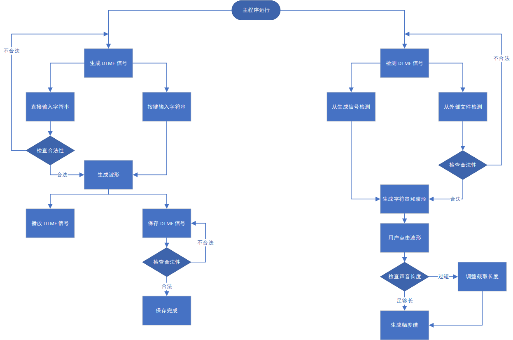
请确保压缩包内的所有文件均已解压缩且它们的相对位置保持不变，否则程序可能无法正常运行。
dtmf.mlapp是主程序，请运行它。
程序的界面设计很友好，应当不需要太多说明。这里仅做简介。
主程序界面左上方为生成信号的时域波形，右上方为检测信号的时域波形，右下方为检测信号的幅度谱，左下方为用户输入部分，分为直接输入（有String Input:提示）和按键输入。按键布局完全复刻 PDF 中的 DTMF 信号简介部分。右侧按键自上而下分别为 perfect 模式、播放与保存。下方是检测 DTMF 信号的按键和检测出的字符串（有Loaded String:提示）。
点击Load按键，打开subLoad子程序，主程序被冻结（所有按键及输入框均无法交互）。当主程序有生成的 DTMF 信号时，默认选中Use generated audio，否则此项不可交互，默认选中Use external audio且显示文件位置输入框。点击此窗口的Load按键，若无异常，将载入所选信号并关闭这一窗口，主窗口恢复交互性，否则弹窗提示 error，并要求重新输入。
点击Save按键，当主程序没有生成的 DTMF 信号时，提示 error，否则打开subSave子程序，主程序被冻结（所有按键及输入框均无法交互）。默认不勾选Also save .wav file选项，若勾选，则显示 .wav 文件位置输入框。点击此窗口的Save按键，若无异常，将保存生成信号到指定位置并关闭这一窗口，主窗口恢复交互性，否则弹窗提示 error，并要求重新输入。
初始界面：
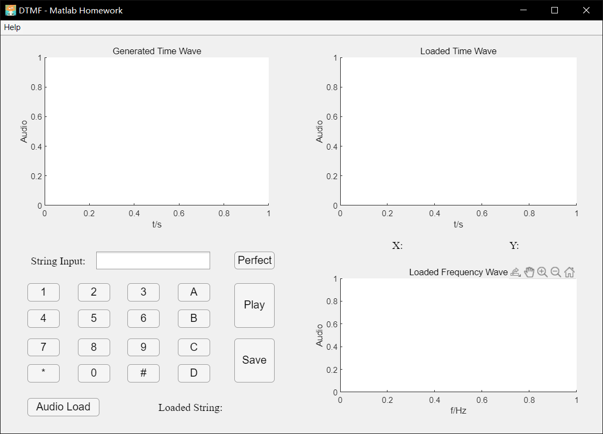
正常输入字符串后：
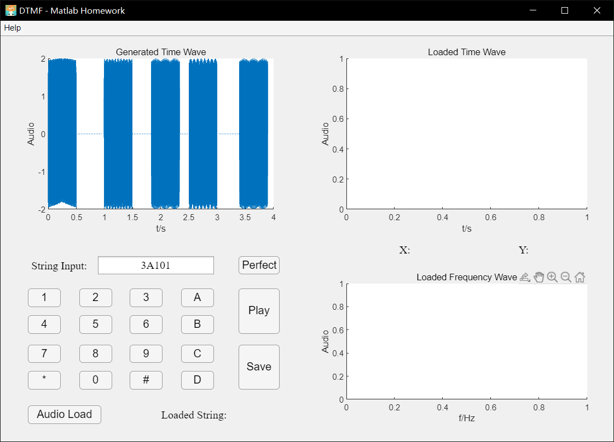
保存界面：
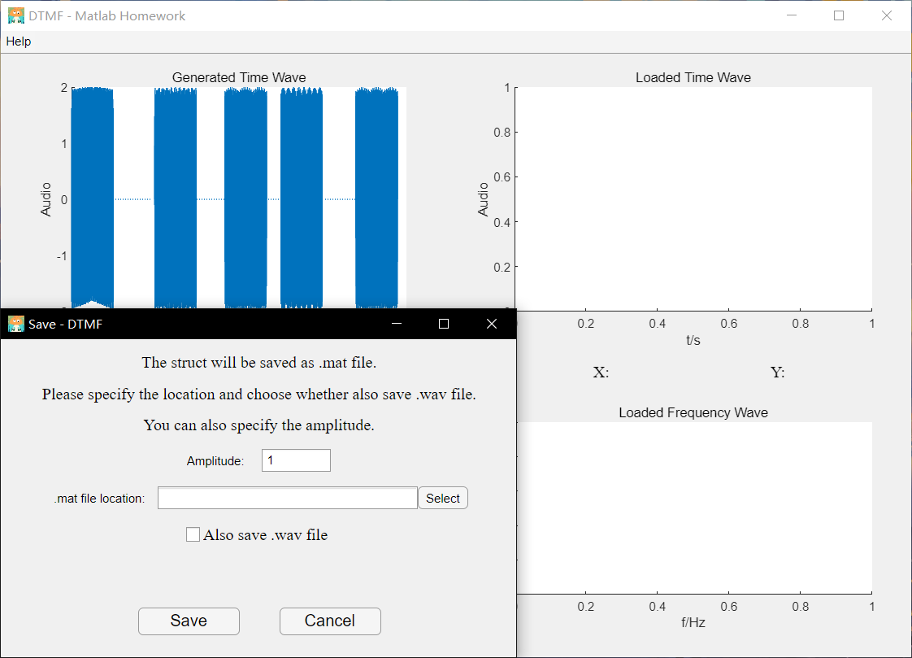
载入界面：
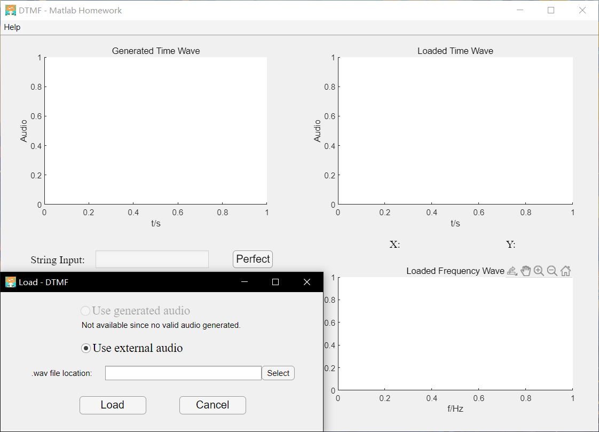
正常载入后：
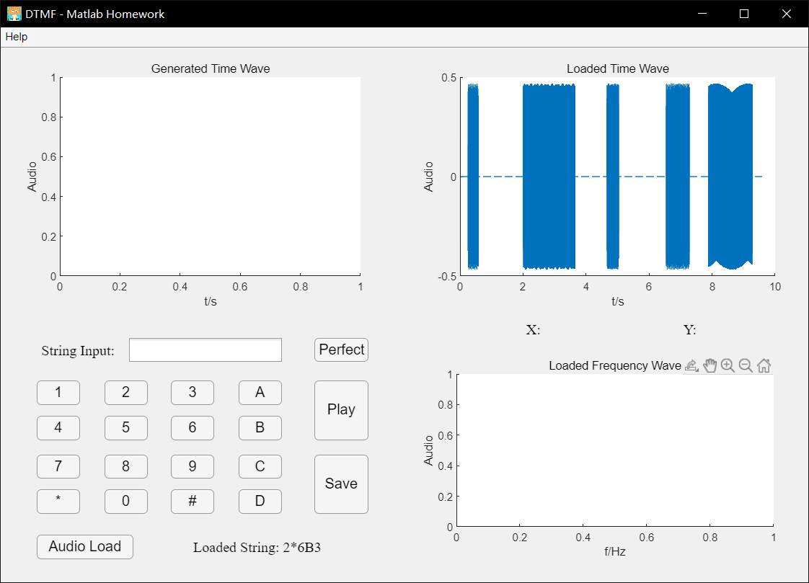
有效单击载入音频的时域波形后（非 perfect 模式）：
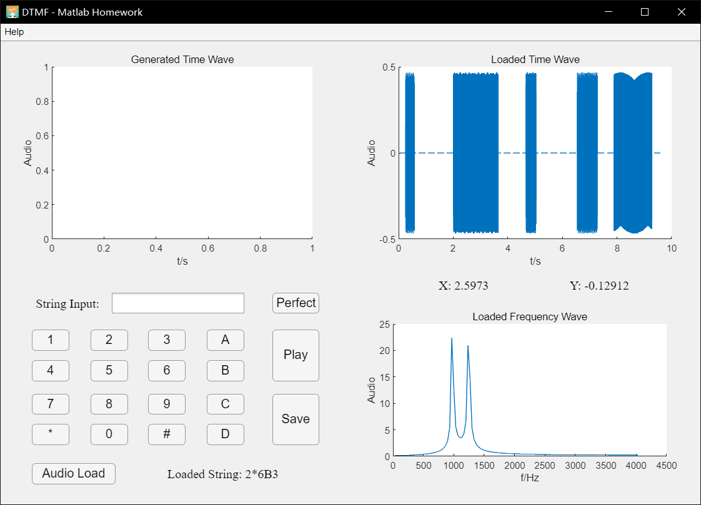
有效单击载入音频的时域波形后（perfect 模式）：
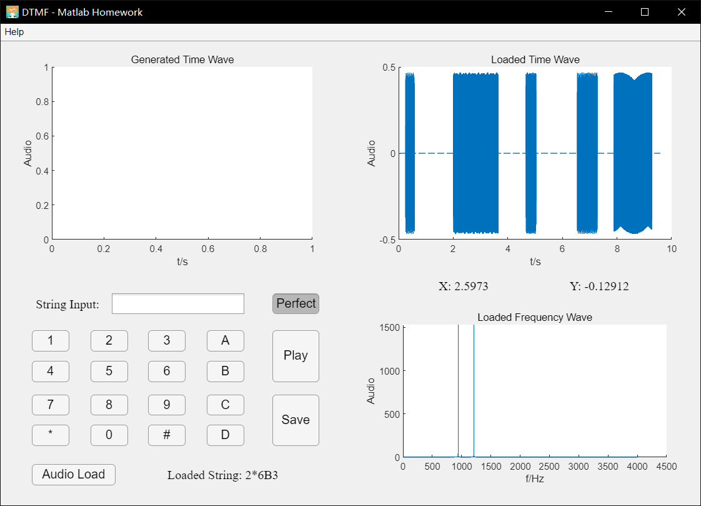
输入小写字母的 warning：（warning 截图仅展示这一种）
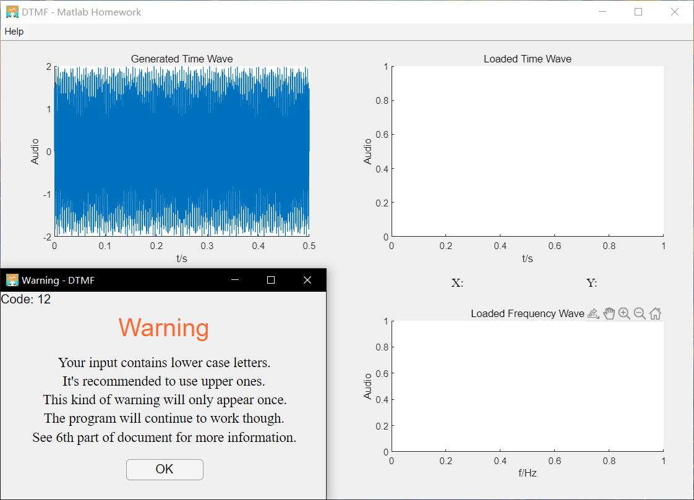
输入非法字符的 error：（error 截图仅展示这一种）
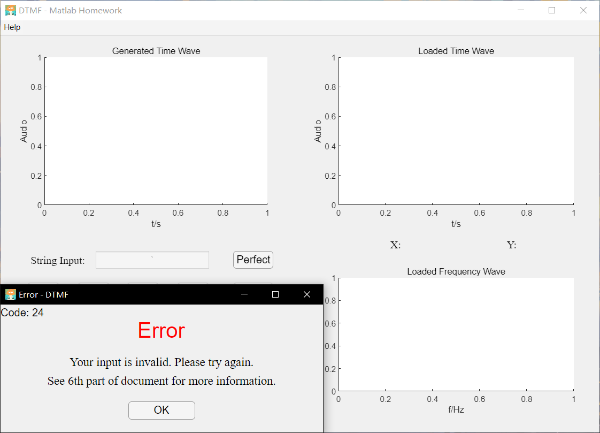
载入音频时因转化的字符串过长而使用的弹窗：
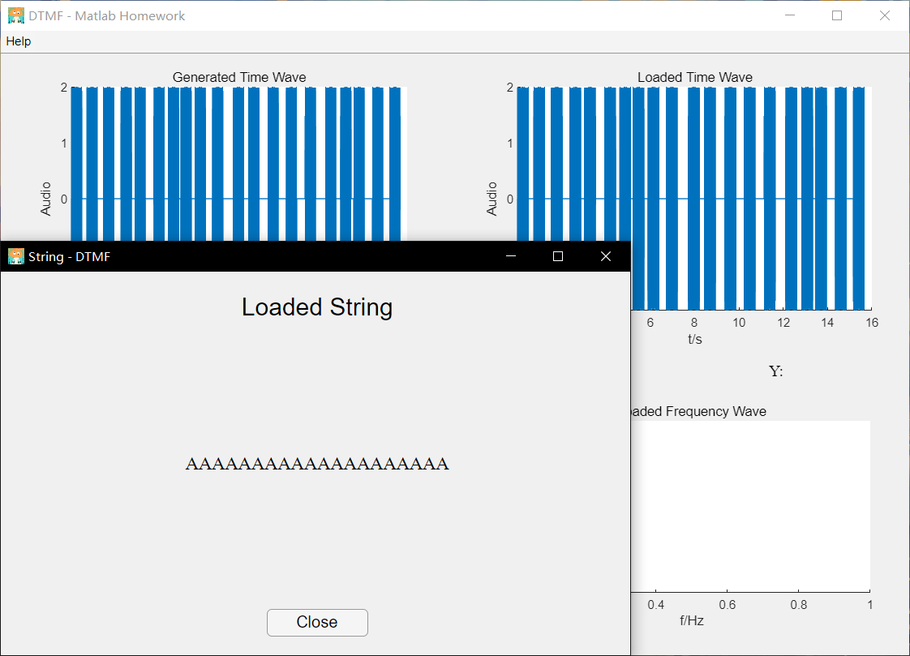
关于界面：
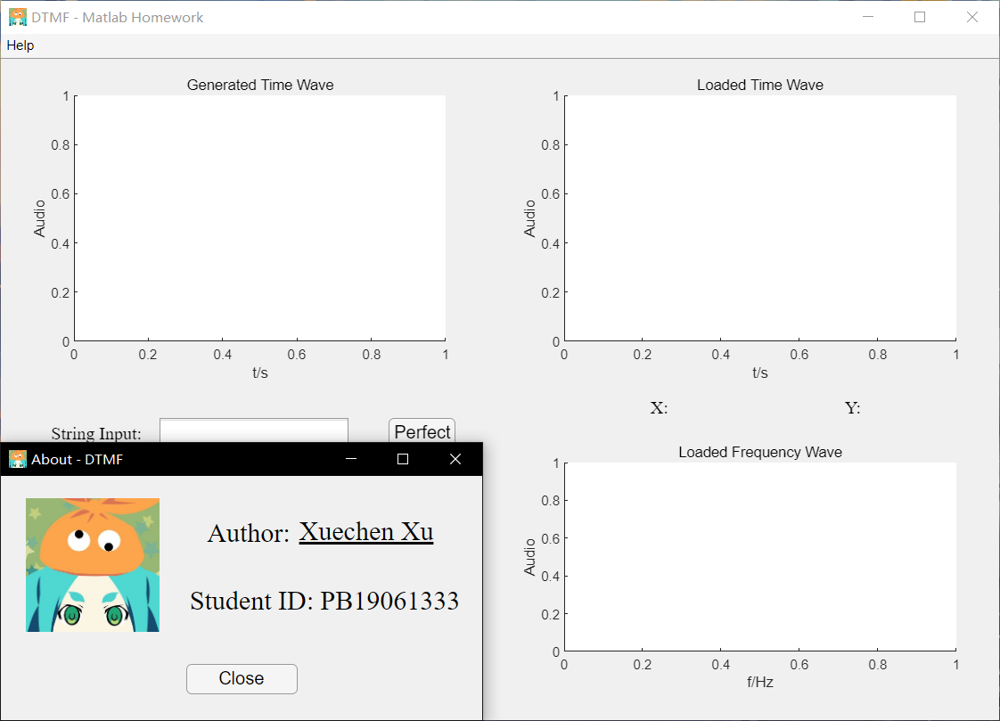
文档界面：
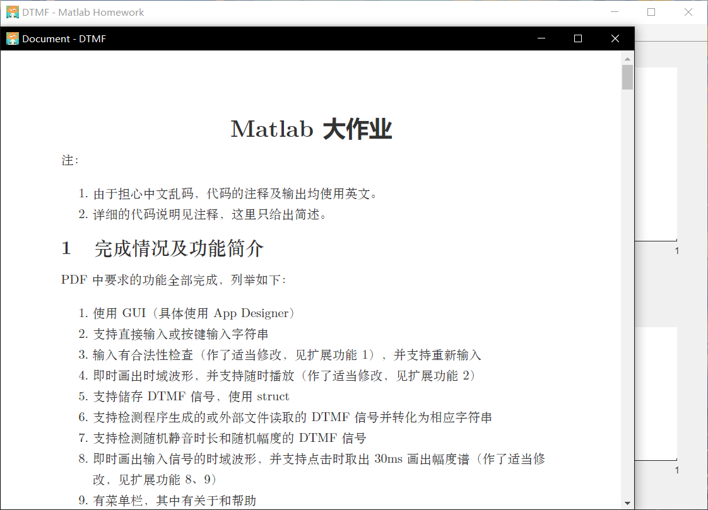
状态码在 error/warning 弹窗的左上角，可对照下文查询。
所有状态码均为二位正整数，success 的状态码以 0 开头，warning 的状态码以 1 开头，error 的状态码以 2 开头。
作保留用途。表示所有操作均成功。
作保留用途。表示不属于以下情况的其他警告。
表示载入的外部音频中，用户所点击的某个非静音的连续片段的时长过短（小于dtmf.mlapp文件中 audioPickTime 属性的值（默认为 0.03s））。程序将自动调小 audioPickTime 属性的值以适应外部音频。
解决方案：可以更换外部音频，也可以忽略这一警告。
表示输入的字符串中包含小写字母 abcd。
解决方案：可以更改为大写字母，也可以忽略这一警告。
作保留用途。表示不属于以下情况的其他错误。
表示载入的外部音频文件不存在。
解决方案：输入有效的音频文件。
表示载入的外部文件不是有效的音频文件。
解决方案：输入有效的音频文件。
表示载入的外部音频文件有效，但不是 DTMF 音频。
解决方案：使用有效的 DTMF 音频文件。如果您坚持认为文件是 DTMF 音频，则可能是程序判定过于严格，请增大dtmf.mlapp文件中 deviation 属性的值（默认为 0.1）。
表示输入的字符串中含有 1234567890*#ABCDabcd 以外的字符。
解决方案：输入有效的 DTMF 字符串。
表示储存时输入的字符串为空。
解决方案：输入有效的 DTMF 字符串。
表示欲储存的位置已有同名文件夹占据。
解决方案：更改储存位置或重命名文件夹。
表示欲储存的位置为空。
解决方案：输入有效的储存位置。
表示无法向欲储存的位置写入文件。这通常是储存位置设置错误或权限不足导致的。
解决方案：更换储存位置（推荐）或使用更高权限运行本程序。